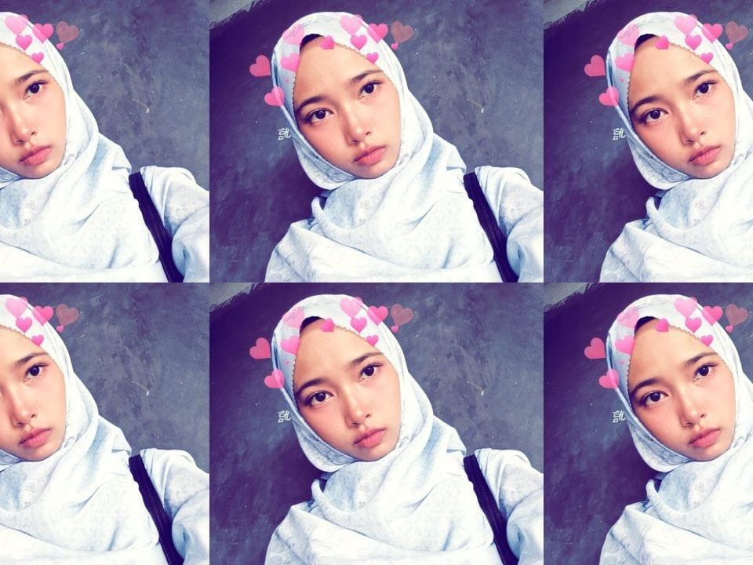

Web ini dirancang untuk menyelesaikan projek dari mata kuliah Pengantar Teknolohi Informasi yakni portofolio diri, maka dari itu silahkan baca portofolio yang sudah saya buat dan susun, mari berkenalan dengan Saya Mahasiswa pemberani aka Nabila Sahad. Enjoy your time
Let's Start
Perkenalkan Nama Saya Nabila Sahad lahir di Tangerang, 23 September 2009 (17 Tahun). Lulusan TKJ Tahun 2025 dan sekarang merupakan salah satu mahasiswa/i Teknik Informatika Universitas Pamulang yang sedang fokus mendalami pemrograman, struktur data, logika algoritma, serta pengembangan diri dalam bidang ilmu Komputer, Digital Design, dan Editing. Saya pribadi merukapan orang yang bertanggung jawab, disiplin, jujur, dan memiliki tekad untuk terus belajar dan berkembang, pada saat ini saya sedikit menguasai bidang editing, serta tengah dalam tahap pembelajaran lebih lanjut terkait beberapa bahasa pemrograman (HTML & CSS, Python, C++).
Program portofolio berbasis web menggunakan HTML dan CSS murni untuk melatih logika dasar pemrograman.
Sistem atau program yang memuat pertitungan belanja sederhana menggunakan cmath, if-else dan elif.
Bertanggung jawab sebagai Ketua Organisasi (Ekstrakulikuler Karate) selama 2 tahun, dimana ikut melatih anggota (Asisten Pelatih), mendata anggota pada saat terdapat kegiatan ujian kenaikan sabuk, bertanggung jawab untuk mengkoordinasi dan mengawasi anggota yang mengikuti ujian, serta menjadi atlet sekaligus mentor atlet saat perlombaan.
Mau ngobrol, sharing ilmu,, atau belajar bareng? Hubungi saya di:
No Telp: 085770983912
Email: nabilasahad16@gmail.com
Telegram: @abilawaktutlh0